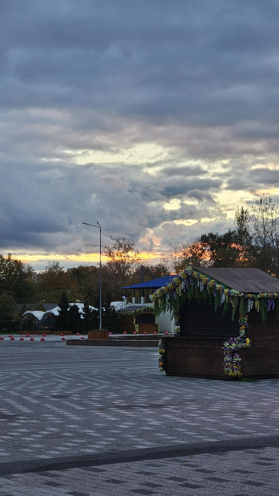
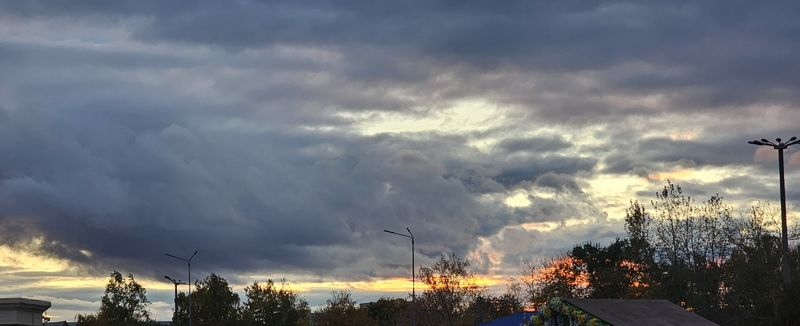
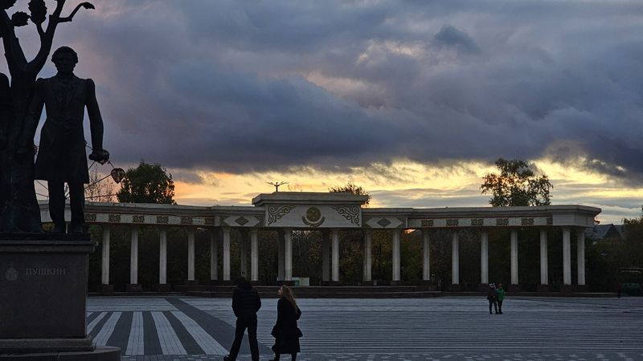
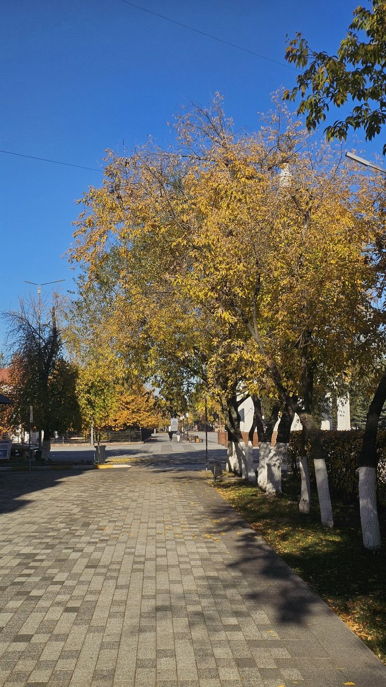
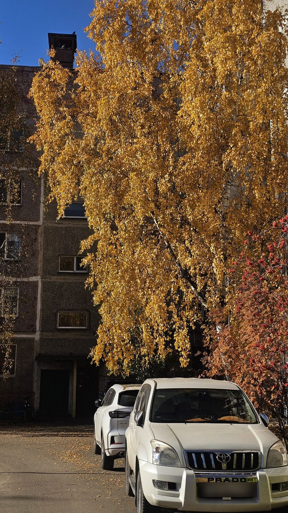
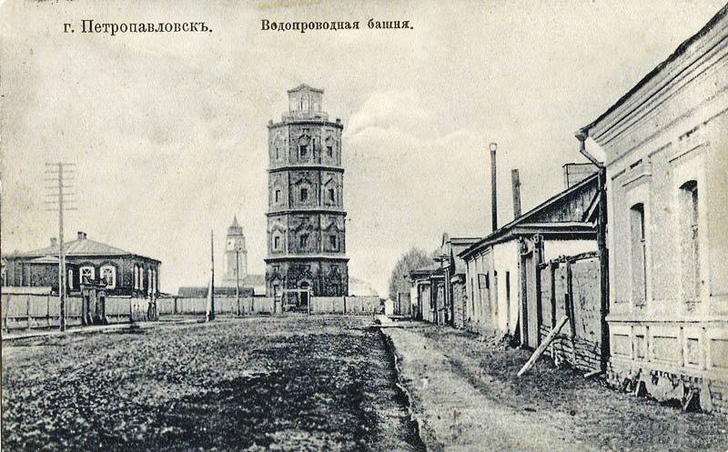
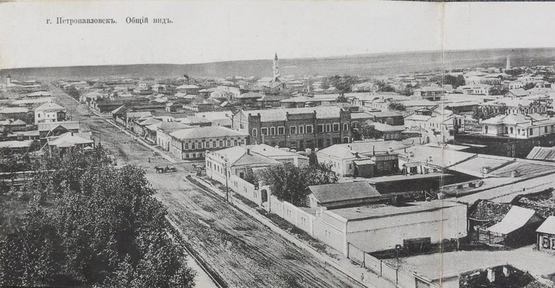
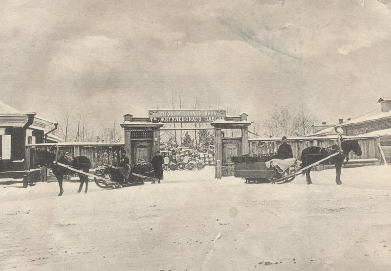
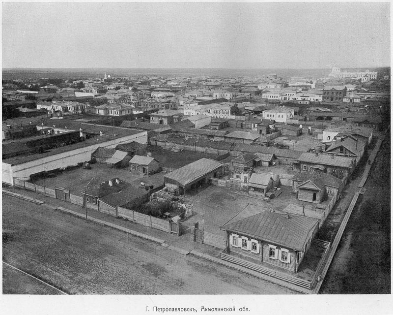
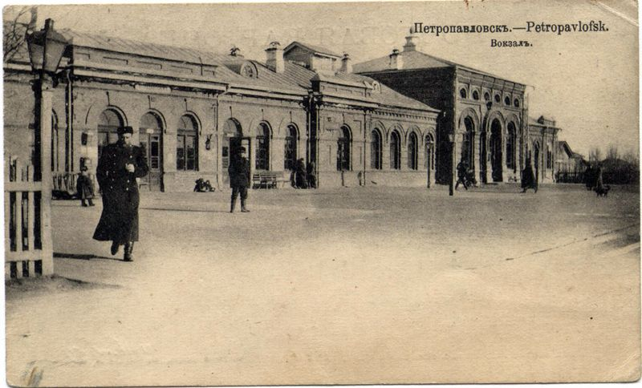

МЧС просит проверить отопление, дымоходы и проводку в домах родителей
Перед зимой МЧС просит проверить дом, где живут родители.
Независимое городское медиа Петропавловска и Северо-Казахстанской области
26 октября 2026
Столько же, сколько вчера
| USD | 451,05 | – 0,00 |
| EUR | 504,95 | – 0,00 |
| RUB | 5,60 | – 0,00 |
| CNY | 67,62 | – 0,00 |
Тенге за единицу валюты на 26.10.2026. По данным Нацбанка РК. Подробнее
Точка: в этот день есть материалы. Нажмите на день, чтобы открыть «Новости за этот день».
Открытых данных о пробках для города нет. Посмотрите их на карте: откроется в новой вкладке.
Праздничные акции Republic Day и Bereke Fest продолжаются во всех 20 регионах страны, в том числе в Северо-Казахстанской области.
Работники системы социальной защиты в этом году отмечают профессиональный праздник в один день с Днём Республики.
Фермеры продают продукты напрямую покупателям на ярмарках «Дала дәмі».
Иван Залезняк из СКО стал бронзовым призёром V Азиатских Параигр в Японии.
23 октября день рождения у Александра Гноевых, звукорежиссёра, который родился в Петропавловске.
Перед зимой МЧС просит проверить дом, где живут родители.
В декабре памятнику Абаю и Пушкину в центре Петропавловска исполнится 20 лет.
22 октября 2026Фото: Домовой NewsРаботники системы социальной защиты в этом году отмечают профессиональный праздник в один день с Днём Республики.
26 октября 2026Фото: Домовой NewsПеред зимой МЧС просит проверить дом, где живут родители.
22 октября 2026Иллюстративное фото. Фото: Acabashi, CC BY-SA 4.0, Wikimedia Commons23 октября день рождения у Александра Гноевых, звукорежиссёра, который родился в Петропавловске.
23 октября 2026Иллюстративное фото. Фото: автор не указан в источнике, CC0, Wikimedia CommonsИван Залезняк из СКО стал бронзовым призёром V Азиатских Параигр в Японии.
23 октября 2026Фото: пресс-служба акимата СКО, из официального пресс-релиза акимата СКО (для публикации в СМИ), gov.kzФермеры продают продукты напрямую покупателям на ярмарках «Дала дәмі».
26 октября 2026Иллюстративное фото. Фото: FranHogan, CC BY-SA 4.0, Wikimedia CommonsПоделитесь теплом нашего города: прогулка с детьми, солнечный парк, закат во дворе, любимый уголок.





У вас сохранились старые снимки? Давайте вспомним, каким он был.





Публикуем только после ручной проверки, с подписью автора. Правила · Вся рубрика

.jpg){kind=link}